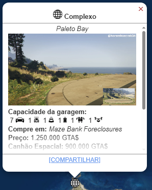
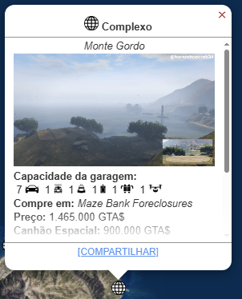
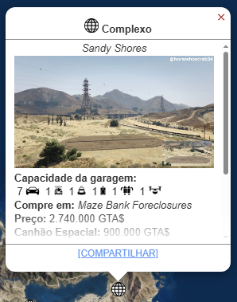
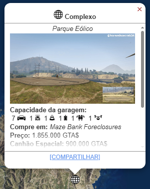
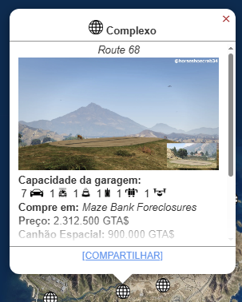
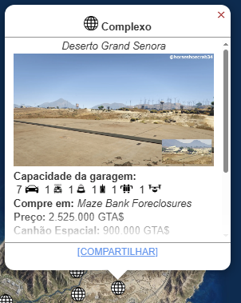
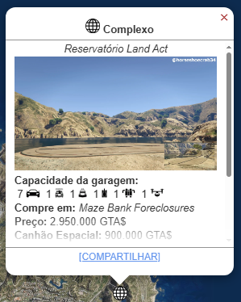

Complexo
O Complexo (Facility) é uma propriedade subterrânea de alto custo introduzida na atualização The Doomsday Heist. Seu valor reside em atuar como a base de operações para os Golpes mais longos e épicos do jogo e como um local de armazenamento exclusivo para veículos militares únicos.

Metodo de Obter
Você pode comprar um Complexo (Facility) no Maze Bank Foreclosures, que você pode acessar pelo navegador da Internet no seu smartphone. O site pode ser encontrado na aba Dinheiro e Serviços ou inserindo o seguinte URL no seu navegador: www.maze-bankforeclosures.com.
No total, existem 9 Complexos disponíveis para compra em diferentes regiões do Condado de Blaine e Los Santos.
- Paleto Bay: $ 1.250.000 
- Mount Gordo: $ 1.465.500 
- Rio Zancudo: $ 1.670.000
- Lago Zancudo: $ 1.670.000
- Sandy Shores: $ 2.740.000 
- Parque Eólico: $ 1.855.000 
- Route 68: $ 2.312.500 
- Deserto Grand Senora: $ 2.525.000 
- Land Act Reservoir: $ 2.950.000 


Melhorias e Personalizações
Terminal de Segurança
Permite iniciar missões de Roubo
de Suprimentos para todos os seus
outros negócios (Bunker, MC Businesses)
a partir do Complexo.
- Terminal de Segurança: $ 1.500.000
Canhão Orbital
Permite disparar um ataque de satélite
contra qualquer jogador no mapa
(uso único e muito caro para recarga).
- Canhão Orbital: $ 900.000
Alojamento
Permite definir o Complexo
como seu ponto de spawn.
- Alojamentos Privados: $ 200.000
Área de Descanso
Adiciona áreas sociais (decoração, bebidas).
- Área de Descanso: $ 180.000
Garagem
Adiciona um andar de garagem
para 7 veículos adicionais.
- Garagem: $ 150.000
Lucro e Funcionamento
O Complexo tem duas funções principais: sediar os Golpes de fim do mundo e servir como base de modificação/armazenamento.
▸ Lucro Principal: O Golpe do Juízo Final (The Doomsday Heist)
- Função: O Complexo é o centro de planejamento para a trilogia de Golpes do Juízo Final, com foco em salvar o mundo de ataques nucleares.
- • Frequência: Os três Golpes são longos, com muitas missões de setup (diferentes dos Golpes do Cassino/Cayo Perico). Não são o método mais eficiente para grinding.
- Requisito: Requer 2 a 4 jogadores para ser concluído.
▸ Veículos e Modificações Exclusivas
- Armazenamento: O Complexo é o lugar para armazenar e modificar veículos militares massivos, como o Avenger (a aeronave VTOL) e o Khanjali (tanque).
- Vantagem: Permite que você compre e use o Cannon Orbital, um sistema de mira de satélite que pode explodir jogadores inimigos no mapa (custo de uso de $500.000 a$ 750.000 por tiro).
▸ Golpes
- Golpe I (Data Breaches):
$ 812.500 - Golpe II (The Bogdan Problem):
$ 1.200.000 - Golpe III (The Doomsday Scenario):
$ 1.500.000
O Complexo é um investimento de conteúdo e utilidade, e não de eficiência de grinding. Ele é comprado para acessar a história épica do Golpe do Juízo Final e obter o Cannon Orbital e o Avenger. O lucro do golpe é alto, mas o tempo necessário para as missões de setup é longo.
Assista a este guia para saber mais sobre. Este vídeo explica como funciona o esquema e como gerenciar.
l